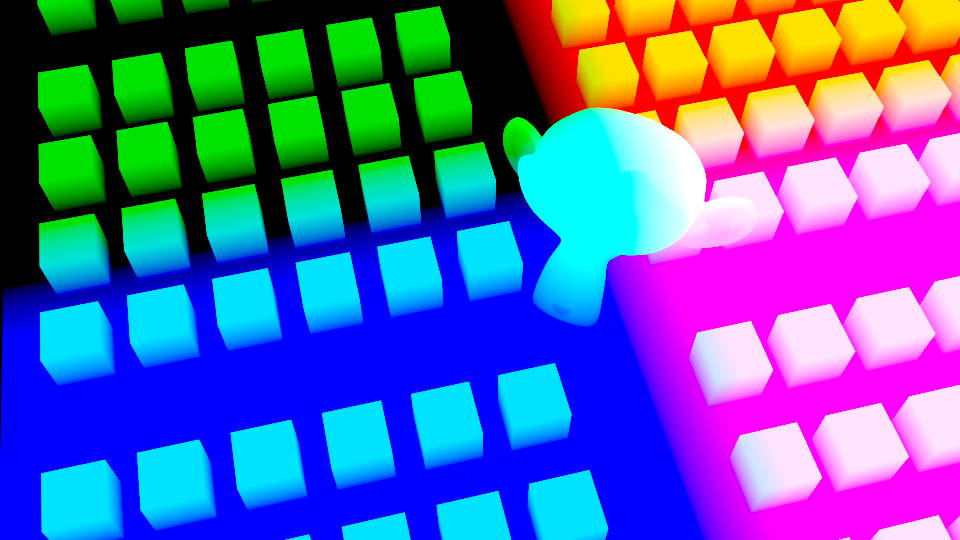

Point Position
Applications
I worked on the grass for Angry Birds Blues. The XGen expressions was used to achieve the look.
One very useful variable I like to use in the XGen expressions is $P (the surface point at which the primitive is being evaluated).
This can be used to create some interesting tool. For example, by knowing the position and radius of an object, we can create a spherical mask
with this expression.
length($P - $some_obj_position) < $some_obj_radius;

We can build something more complex like creating a mask that fits the camera frustum.

Think of $P as world space which means it can be converted to camera space then screan space using some matrix formulas.
We can use the following to rotate $P (world space) so that it matches the camera rotation.

Translation is simply done by subtracting $P by the camera translation.
Now we can give it a perspective that respects the camera FOV using this formula:

Python can be used to query info about any camera and pass to any XGen description using XGen API.

If we execute the tools every frame by passing them here:

We get this.


Note : XGen culling options are not being used here. This result is achieved by expressions only.
Everything you've seen can be applied to any DCC that provide some representation of a coordinate space.
This can be an image like a render of point poisition AOV.

This is a gizmo I built in Nuke that takes a render of point position AOV and convert it from world space to screen space
just like I did with XGen except this time instead of create a frustum mask of black and white values,
I created a gradient red and grean map (0 to 1) so that I can take advantage ot the STMap node in Nuke like I did with the speedline tool.

That allows us to project any image to our renders without the need to import the geos.
all we need is a point position AOV and a camera.

The applications are endless but here are some more.